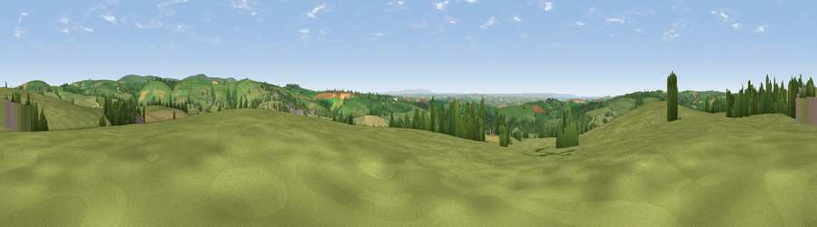

Viewpoint near Bratton Fleming
#9652 in England · top 22% of its area beats it · near Bratton FlemingThe view, rendered

A 360° render of this exact spot computed from the terrain model, tree cover and land cover — summer colours, afternoon light, calibrated against photographs of famous viewpoints. Real trees, hedges and buildings will differ in detail.
The panorama
Grey silhouette: terrain skyline in each direction (720 bearings, Earth curvature and refraction included). Dashed green: skyline with trees (+15 m) and buildings (+8 m) as obstacles. Blue strip: how far the ground is visible on each bearing.
Where the view opens
Wedge length = distance to the farthest visible ground on that bearing (vegetation-aware). Rings at 10, 25 and 50 km.
What fills the view
83% grassland · 11% woodland · 5% cropland ·
Angular shares of the visible panorama (visual magnitude), not map area. Landscape diversity 0.27 (0–1 Shannon).
Key numbers
More beautiful places nearby
The staircase of upgrades: each row has a higher view potential than everything closer. Driving times are estimates from straight-line distance, calibrated against real road routing — check an actual route before setting out.
| Place | Direction | Drive | Score |
|---|---|---|---|
| Viewpoint near Bratton Fleming | WNW · 1 km | ~2 min | 65.2 |
| Viewpoint near Bratton Fleming | ESE · 3 km | ~7 min | 69.8 |
| Viewpoint near Parracombe | NE · 6 km | ~12 min | 71.3 |
| Viewpoint near Muddiford | W · 6 km | ~13 min | 71.5 |
| Viewpoint near Challacombe | NE · 7 km | ~15 min | 72.2 |
| Viewpoint near Challacombe | E · 8 km | ~16 min | 75.8 |
| Berry Down | NW · 8 km | ~16 min | 76.7 |
| Viewpoint near Challacombe | NE · 8 km | ~17 min | 77.1 |
51.13399, -3.96393 · source: screening · position refined by local search. Computed location — check access rights before visiting.